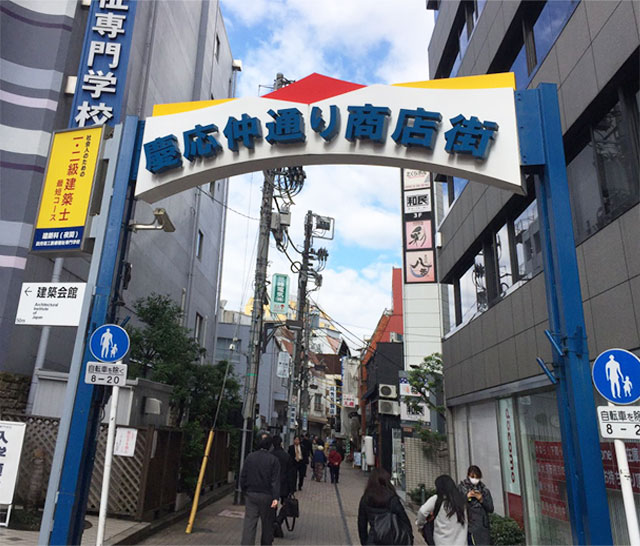

📍基本情報
所在地: 東京都港区芝
路線: JR東日本（山手線・京浜東北線）
座標: 35°38'44"N 139°44'52"E
田町駅は東京の中心部に位置し、JR山手線と京浜東北線が交差する重要な交通ハブです。駅周辺は商業施設、飲食店、オフィスビルが密集した活気ある繁華街となっています。
🚄アクセス情報
主要路線
- JR山手線: 外回り/内回り運行
- JR京浜東北線: 北行/南行運行
- 周辺駅までの所要時間
- 品川駅まで: 約3分
- 浜松町駅まで: 約2分
- 東京駅まで: 約10分
- 渋谷駅まで: 約15分
| 目的地 | 所要時間 | 運賃 |
|---|---|---|
| 品川駅 | 3分 | 210円 |
| 東京駅 | 10分 | 210円 |
| 渋谷駅 | 15分 | 220円 |
| 新宿駅 | 17分 | 220円 |
🏬繁華街の特徴
🍽️ グルメエリア
ラーメン、居酒屋、カレー、寿司など多様な飲食店が集中しており、ランチからディナーまで多くの選択肢があります。
🛍️ ショッピング
駅直結の商業施設や周辺の商店街で、衣料品から日用品まで幅広い商品が購入できます。
🏢 ビジネスエリア
多数のオフィスビルと主要企業の本社が集中し、ビジネスの中心地として機能しています。
🌙 ナイトライフ
バー、クラブ、カラオケなど夜間のエンターテインメント施設が充実しています。
🌟 田町駅周辺の主な商業施設
- JR東日本ビル: オフィス・商業施設の複合ビル
- MITA・AIR: 駅直結の大型商業施設
- 芝市場: 地域密着型の商店街
- 港区立図書館: 文化施設
🍜飲食店情報
人気ジャンル別ガイド
| ジャンル | 特徴 | 平均価格帯 | 営業時間の目安 |
|---|---|---|---|
| ラーメン・つけ麺 | 駅周辺に多く集中、味噌・醤油・豚骨など豊富 | 800～1,200円 | 11:00～23:00 |
| 居酒屋 | ビジネスマン・学生で賑わう。串焼きや刺身など | 3,000～5,000円 | 17:00～24:00 |
| 寿司・和食 | ランチセットがお得。新鮮な素材を使用 | 2,000～8,000円 | 11:00～22:00 |
| カレー・アジア料理 | バラエティ豊か。急いでいる時に最適 | 1,000～2,000円 | 11:00～22:00 |
| カフェ・スイーツ | 朝食からデザートまで。会合の場としても利用 | 1,000～2,500円 | 7:00～21:00 |
💡 ランチのコツ
11時30分～13時は非常に混雑します。時間帯をずらすか、予約をおすすめします。特にラーメン店は待ち時間が長いことが多いです。
⭐エリアの利便性
🚌 交通
JR山手線・京浜東北線の結節点として、主要駅への接続が優秀です。バスターミナルも完備。
🏥 医療
複数の診療所・歯医者が駅周辺に立地。夜間対応可能な施設も多数あります。
💼 金融
銀行・ATM・郵便局が充実。ビジネス関連の金融機関も多数立地しています。
📱 サービス
携帯キャリアショップ、コンビニ、スーパーなど日常生活に必要な施設が全て揃っています。
⏰時間帯別の雰囲気
朝（7:00～9:00）
通勤ラッシュのピーク。駅構内は混雑しており、駅周辺のカフェは朝食を取る会社員で一杯です。
昼（11:00～14:00）
ランチタイムの繁忙期。飲食店は大行列。オフィスワーカーと観光客で最も混雑する時間帯です。
夜（17:00～23:00）
最も活気のある時間帯。居酒屋が満席になり、会社員の打ち上げや集まりで大賑わいです。
深夜（23:00～）
ナイトライフの中心時間。バーやカラオケ店が活発。終電後のタクシーで溢れかえります。
ビジネスマンの割合: 約60%（平日）
観光客の割合: 約20%
地元住民: 約20%
🏛️周辺の注目施設
文化・娯楽施設
- 国立美術館（近隣）- 美術展覧会を定期開催
- 増上寺 - 東京都心で最古の寺院の一つ
- 港区立図書館 - 最新の蔵書と設備
スポーツ・健康施設
- フィットネスジム（複数店舗）
- ヨガスタジオ
- 公共パーク・スポーツセンター
宿泊施設
- ビジネスホテル（複数）
- 高級ホテルチェーン
- カプセルホテル
💡訪問の際のコツ
推奨事項
- ✅ 平日昼間は避け、早朝か夜間に訪れるのがおすすめ
- ✅ 連休や特別なイベント時は更に混雑するため要注意
- ✅ 電子マネーの利用で決済がスムーズです
- ✅ 駅の多目的トイレは比較的清潔で利用しやすい
- ✅ 天気が良い日は駅周辺の歩道でリラックスできます
注意点
- ⚠️ 駅構内は非常に混雑するため、貴重品の管理に注意
- ⚠️ 立ち食いそばなど、短時間利用の飲食店が多い
- ⚠️ 高いビルが多いため、風が強い日がある
- ⚠️ 夜間の一部エリアは注意が必要
🏘️関連エリア：慶応の仲町通り商店街

慶応仲町通り商店街の入口風景
📍 仲町通り商店街について
慶応大学周辺に位置する仲町通り商店街は、田町駅エリアと同じく東京を代表する商店街の一つです。懐かしさと現代性が共存するこのエリアは、学生からビジネスマンまで様々な層に愛されています。
🌟 仲町通り商店街の特徴
🎓 学生向け
慶応大学学生を中心に、リーズナブルな価格帯のお店が充実。学生生活に欠かせない商店街です。
🍱 飲食店
大衆的な食堂からおしゃれなカフェまで、多彩な飲食オプションが揃っています。
🏪 小売店
本屋、文房具店、生活雑貨など、日常生活に必要なお店が軒を連ねています。
👥 コミュニティ
地域の人々が交流し、昔ながらの商店街文化が息づいています。
💡 田町駅エリアとの関連性
仲町通り商店街は、田町駅から比較的近く、アクセスしやすい位置にあります。両方のエリアを訪れることで、東京の多様な商業・文化の側面を理解することができます。
🎯まとめ
田町駅前の繁華街は、東京を代表するビジネス・商業エリアです。JR山手線と京浜東北線の結節点として、交通の便が非常に優れており、多くの会社員や観光客が訪れます。
豊富な飲食店、充実した商業施設、そして活気あふれる雰囲気が特徴。昼間のランチから夜間のナイトライフまで、時間帯によって異なる顔を見せるこのエリアは、東京滞在中に必ず立ち寄る価値がある場所です。
ビジネスでの利用から観光まで、様々なニーズに応えることができるエリアとして、今後も東京の中心地として機能し続けるでしょう。